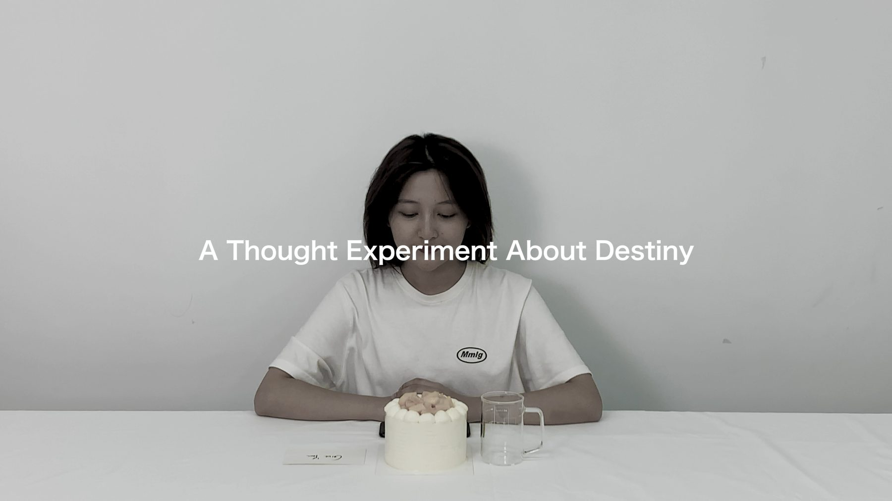
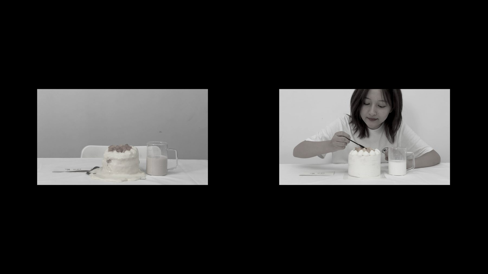
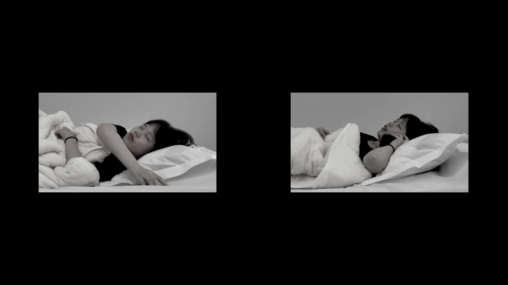
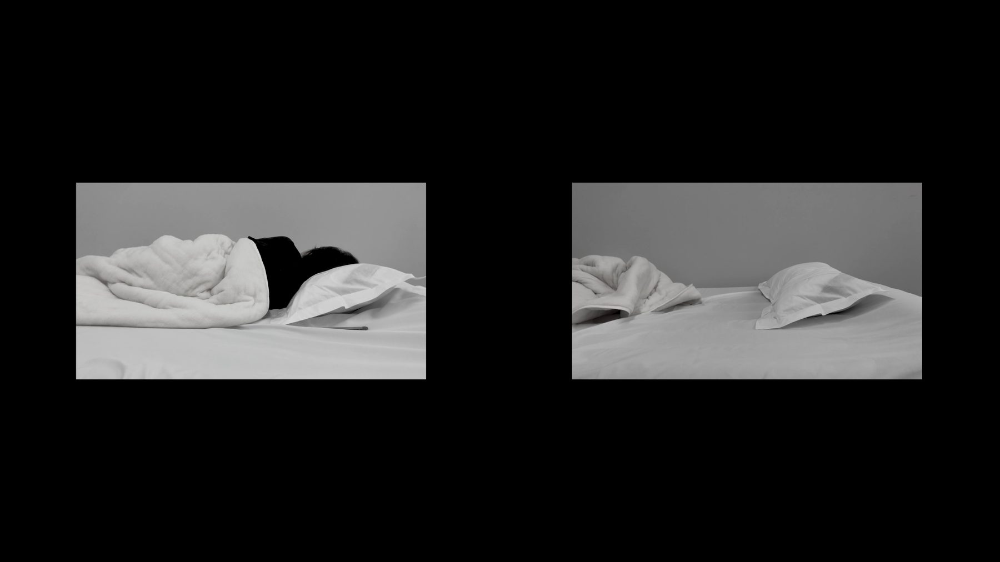
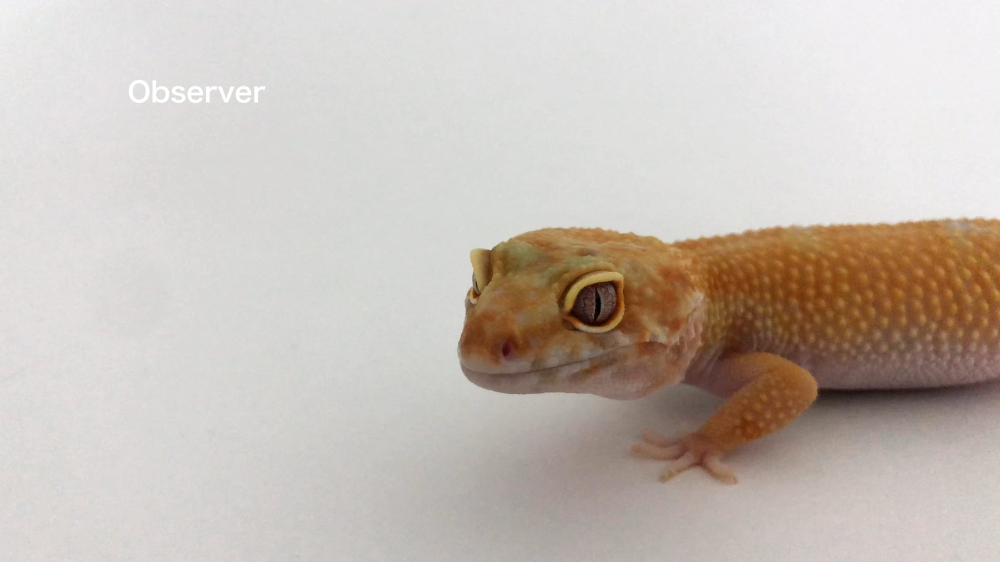
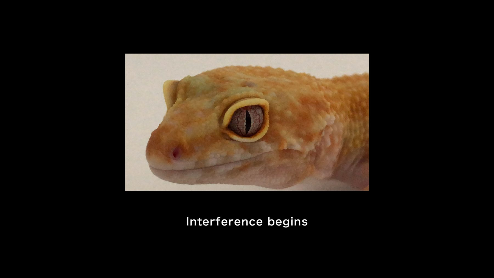
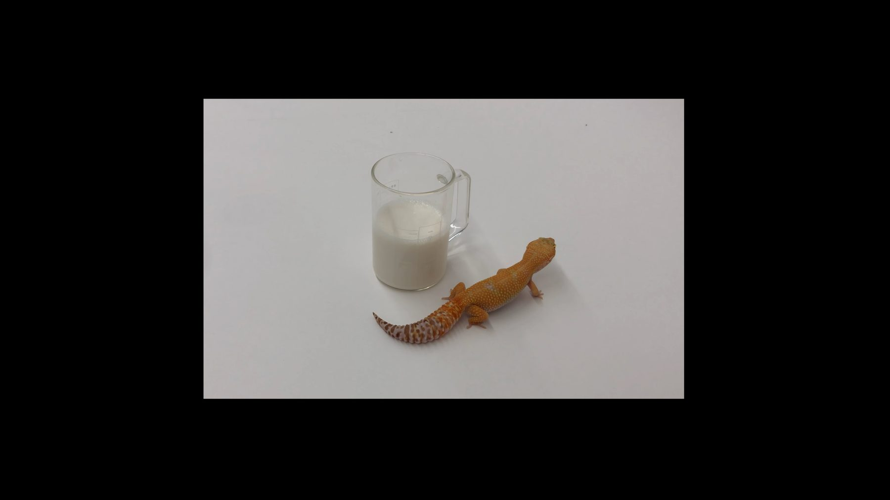
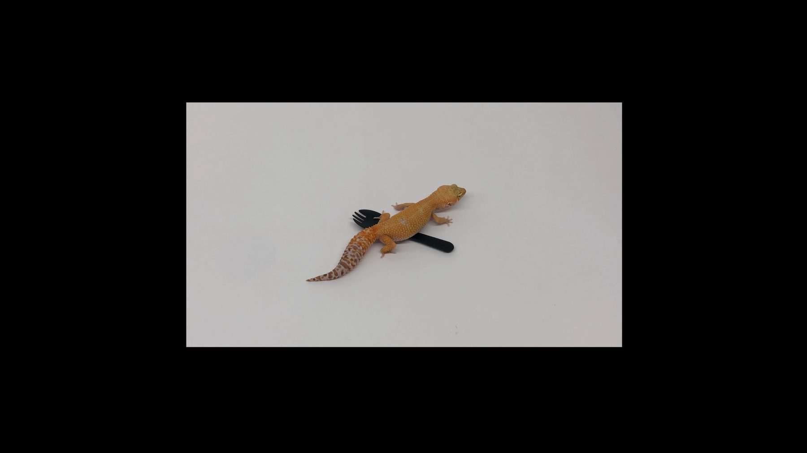
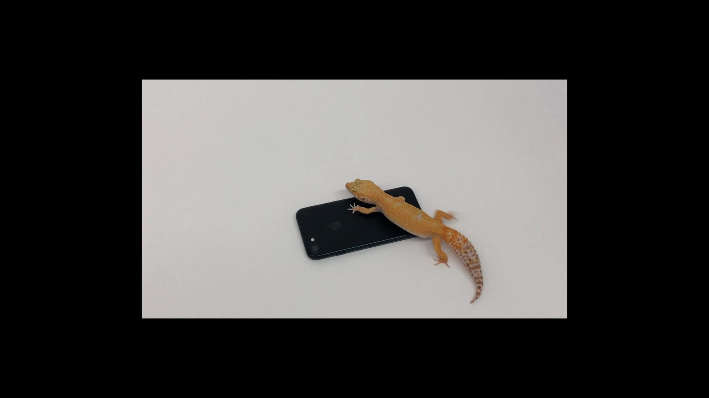

Schrödinger’s Cake

Schrödinger’s Cake starts from the uncertainty principle in quantum physics. It takes the observer effect, in which the act of observing a system changes it, and places it in an everyday, macroscopic setting. The result is a thought experiment about fate seen from the position of the observer, and a way of discussing fate through science.
The outcome is an experimental short film with multiple endings. It tells the story of whether its protagonist can eat a cake that she is destined not to eat.




Fatalism and its opposite are views of fate particular to human society, and most discussion of destiny rests on theology or metaphysics, from traditional Chinese fortune-telling to Western tarot. The film approaches the same subject through scientific theory instead, to see whether the conclusions change, and whether people’s views on fate change with them.





Credits
- Artist and director
- Jimmy Chen
- Performer
- Can Lin